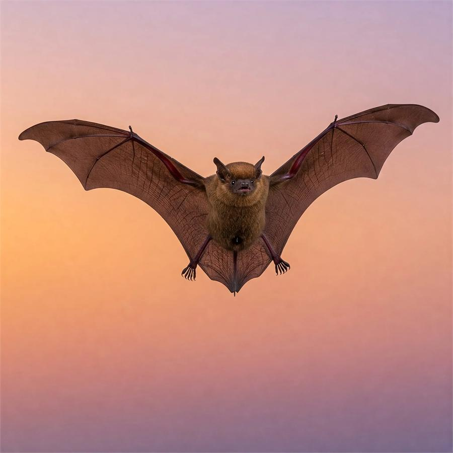
Murciélago
Prevención de ingreso y permanencia en techos, altillos y estructuras.
Más información →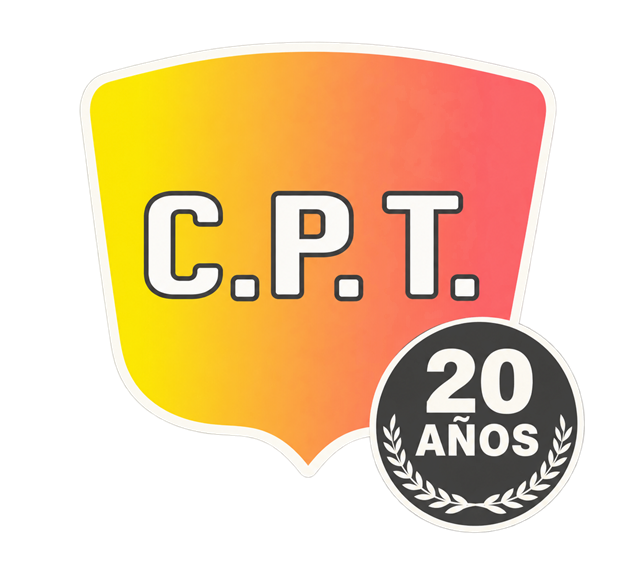
Tratamientos efectivos, mantenimientos programados y soluciones con garantía para hogares, comercios e industrias.
Cada espacio y cada problema requieren una respuesta distinta. Diseñamos el tratamiento adecuado según la situación.

Prevención de ingreso y permanencia en techos, altillos y estructuras.
Más información →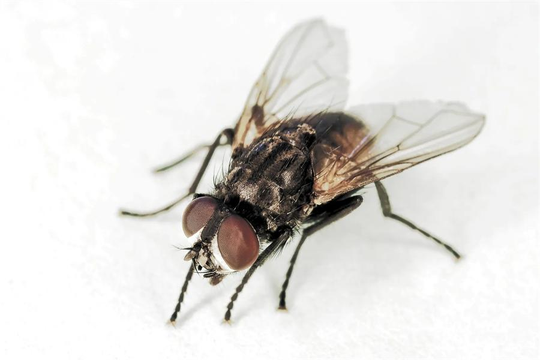
Control y prevención para hogares, comercios y espacios de trabajo.
Más información →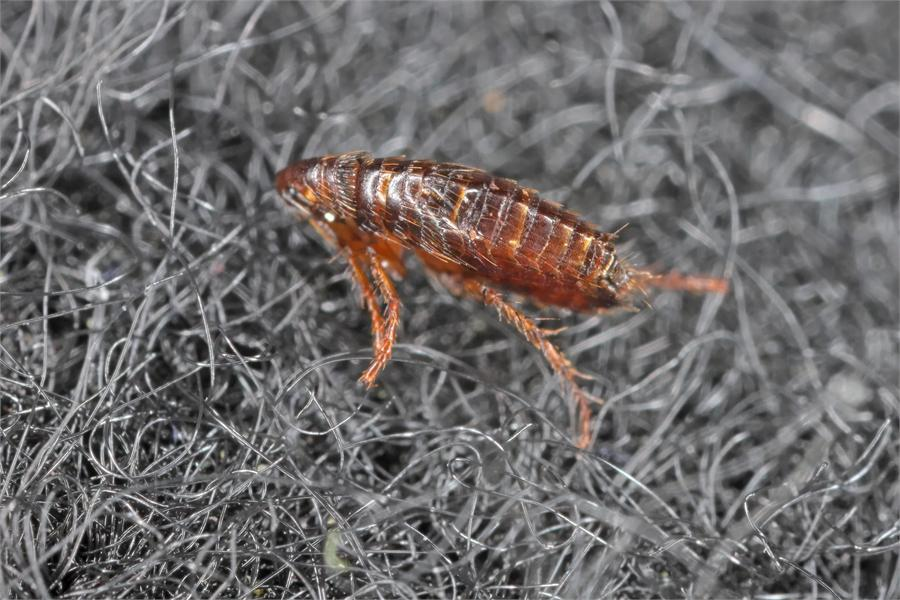
Tratamientos de ambientes afectados y acciones para reducir reapariciones.
Más información →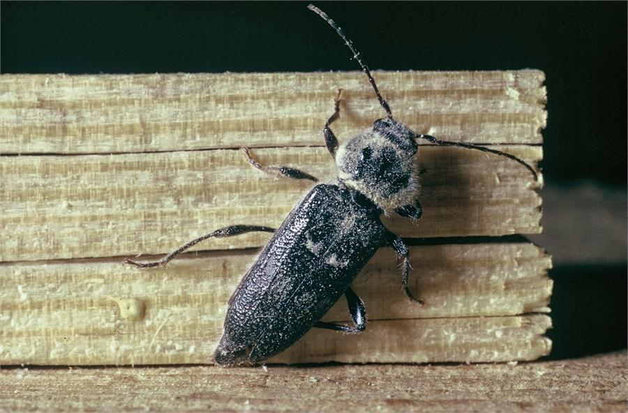
Tratamientos para proteger madera, muebles y estructuras.
Más información →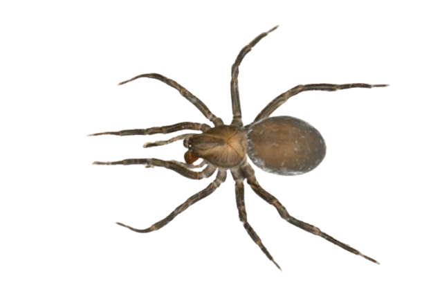
Control y prevención en interiores, exteriores y lugares de guardado.
Más información →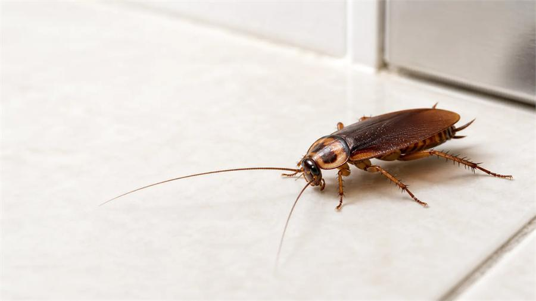
Tratamientos para cocinas, hogares y espacios comerciales.
Más información →Control profesional para viviendas, depósitos e industrias.
Más información →Inspección, control y prevención en viviendas y áreas exteriores.
Más información →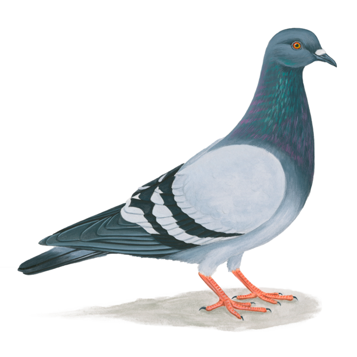
Control y prevención para fachadas, techos y otras estructuras.
Más información →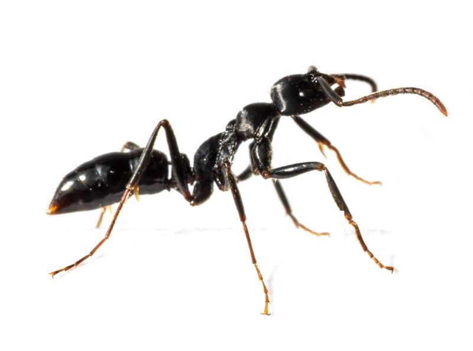
Control y prevención de colonias en cocinas, patios y accesos.
Más información →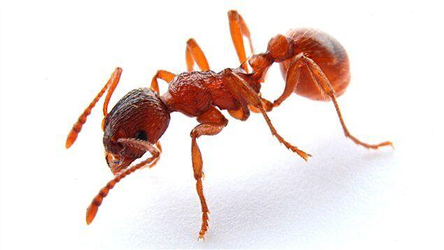
Tratamientos para focos en jardines, patios y espacios exteriores.
Más información →Un abordaje técnico y responsable para resolver la situación actual y ayudar a prevenir que vuelva a aparecer.
Analizamos el tipo de plaga y el nivel de infestación.
Aplicamos el método adecuado según cada situación.
Realizamos controles y mantenimientos cuando es necesario.
Desde una casa de familia hasta una operación industrial: adaptamos el servicio a cada entorno.
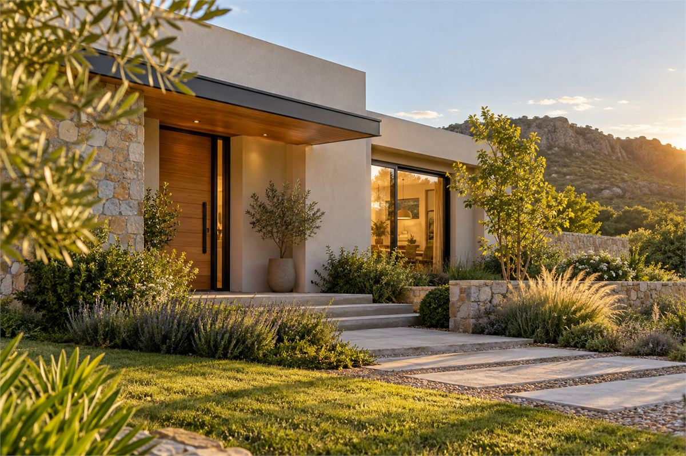
Protegé tu casa y tu familia con tratamientos profesionales y seguros.
Planes de control y mantenimiento adaptados a cada actividad.
Prevení problemas antes de que aparezcan con controles periódicos.
Para establecimientos que requieren controles frecuentes.
Consultar planSeguimiento periódico y prevención ajustada a tu espacio.
Consultar planIdeal para mantener espacios protegidos durante todo el año.
Consultar planTrabajamos con procedimientos profesionales y seguimiento para lograr soluciones efectivas.
Atendemos consultas de hogares, comercios e industrias en Tandil, Las Armas, General Guido, Azul, Ayacucho, Maipú, Rauch y Benito Juárez. Consultanos por tratamientos y planes de mantenimiento en tu localidad.
Consultar por WhatsAppTratamientos especializados.
Seguimiento de los trabajos.
Tandil y localidades de la región.
Soluciones según cada situación.
Conocé de cerca algunos trabajos y espacios donde se desempeña nuestro equipo.
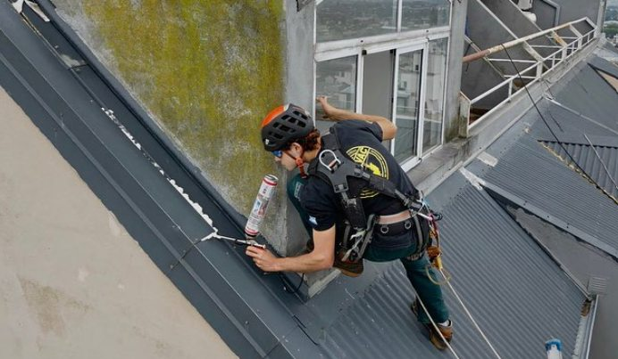
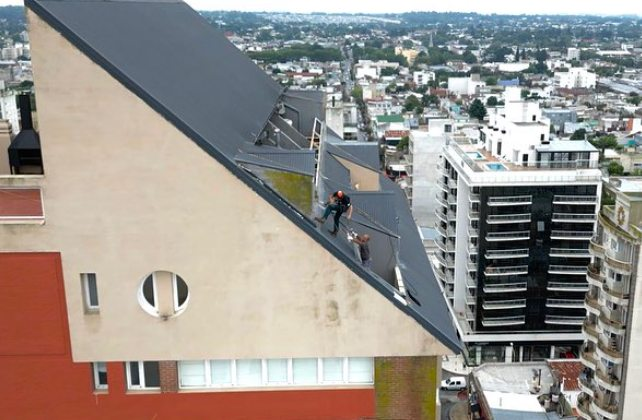
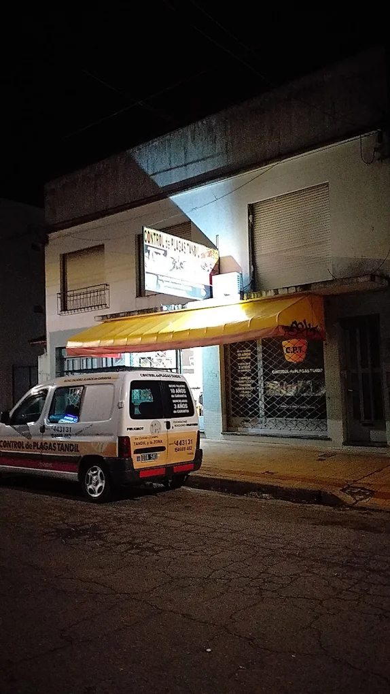
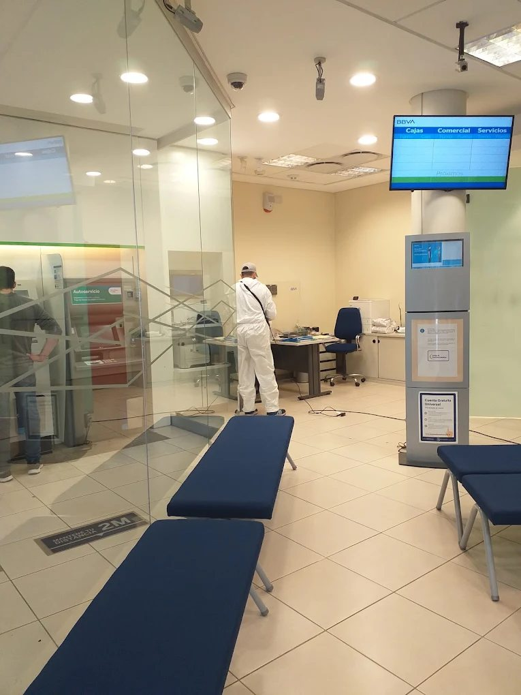
Información clara sobre los servicios y la cobertura de C.P.T.
Trabajamos en Tandil, Las Armas, General Guido, Azul, Ayacucho, Maipú, Rauch y Benito Juárez. Si estás en otra localidad, consultanos por cobertura.
Atendemos consultas por murciélagos, moscas, pulgas, bicho taladro, arañas, cucarachas, roedores, escorpiones, palomas, hormigas negras y hormigas rojas. El tratamiento se define después de evaluar cada situación.
Sí. Hay opciones de seguimiento semanal, quincenal y mensual, con controles y acciones de monitoreo según las necesidades del espacio.
Sí. Los servicios están orientados a hogares, comercios, hoteles, depósitos e industrias. Podés consultar por un presupuesto según tu caso.
Contanos qué está pasando y te asesoramos.